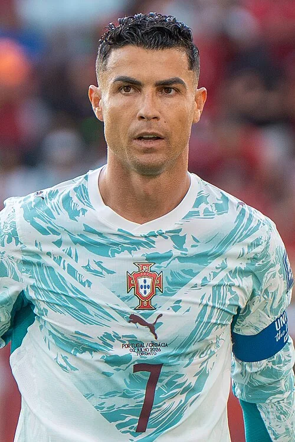

Photo source ↗Bryan Berlin · CC BY-SA 4.0
The profile
Cristiano Ronaldo
Cristiano Ronaldo is a Portuguese forward whose movement, finishing and aerial ability made him a long-standing national-team focal point.
He rose through Sporting CP before playing for Manchester United, Real Madrid and Juventus. Across those clubs he developed from a winger into a prolific forward who could score from a wide range of positions.
From 2006 through 2026, Ronaldo made 27 World Cup appearances and scored 11 goals. Portugal’s best finish during those tournaments was fourth place in 2006.
2006Germany
Fourth place
Group D Angola0 : 1Portugal
- PAULETA4′
Angolahome
Starting lineup
- JOAO RICARDO
- JAMBA
- KALI
- LOCO
- DELGADO
- FIGUEIREDO
- ANDRE
- MATEUS
- MENDONCA
- ZE KALANGA
- AKWA
Substitutions
- 60′MANTORRAS on · AKWA off
- 70′EDSON on · ZE KALANGA off
- 80′MILOY on · FIGUEIREDO off
Portugalaway
Starting lineup
- RICARDO
- FERNANDO MEIRA
- MIGUEL
- NUNO VALENTE
- RICARDO CARVALHO
- PETIT
- TIAGO
- Luis FIGO
- PAULETA
- SIMAO
- CRISTIANO RONALDO
Substitutions
- 60′COSTINHA on · CRISTIANO RONALDO off
- 72′MANICHE on · PETIT off
- 83′HUGO VIANA on · TIAGO off
Group D Portugal2 : 0Iran
- DECO63′
- CRISTIANO RONALDO80′ · pen.
Portugalhome
Starting lineup
- RICARDO
- FERNANDO MEIRA
- MIGUEL
- NUNO VALENTE
- RICARDO CARVALHO
- COSTINHA
- MANICHE
- DECO
- Luis FIGO
- PAULETA
- CRISTIANO RONALDO
Substitutions
- 67′PETIT on · MANICHE off
- 80′TIAGO on · DECO off
- 88′SIMAO on · Luis FIGO off
Iranaway
Starting lineup
- Ebrahim MIRZAPOUR
- Yahya GOLMOHAMMADI
- Rahman REZAEI
- Hossein KAEBI
- Mohammad NOSRATI
- Mehdi MAHDAVIKIA
- Javad NEKOUNAM
- Ali KARIMI
- Andranik TIMOTIAN
- Mehrzad MADANCHI
- Vahid HASHEMIAN
Substitutions
- 65′Ferydoon ZANDI on · Ali KARIMI off
- 66′Rasoul KHATIBI on · Mehrzad MADANCHI off
- 88′Sohrab BAKHTIARIZADEH on · Yahya GOLMOHAMMADI off
Round of 16 Portugal1 : 0Netherlands
- MANICHE23′
Portugalhome
Starting lineup
- RICARDO
- FERNANDO MEIRA
- MIGUEL
- NUNO VALENTE
- RICARDO CARVALHO
- COSTINHA
- MANICHE
- DECO
- Luis FIGO
- PAULETA
- CRISTIANO RONALDO
Substitutions
- 34′SIMAO on · CRISTIANO RONALDO off
- 46′PETIT on · PAULETA off
- 84′TIAGO on · Luis FIGO off
Netherlandsaway
Starting lineup
- Edwin VAN DER SAR
- Khalid BOULAHROUZ
- Joris MATHIJSEN
- Giovanni VAN BRONCKHORST
- Andre OOIJER
- Phillip COCU
- Mark VAN BOMMEL
- Wesley SNEIJDER
- Dirk KUYT
- Arjen ROBBEN
- Robin VAN PERSIE
Substitutions
- 56′Rafael VAN DER VAART on · Joris MATHIJSEN off
- 67′John HEITINGA on · Mark VAN BOMMEL off
- 84′Jan VENNEGOOR OF HESSELINK on · Phillip COCU off
Quarterfinal England0 : 0Portugal
Englandhome
Starting lineup
- Paul ROBINSON
- Gary NEVILLE
- Ashley COLE
- Rio FERDINAND
- John TERRY
- Steven GERRARD
- David BECKHAM
- Frank LAMPARD
- Joe COLE
- Owen HARGREAVES
- Wayne ROONEY
Substitutions
- 52′Aaron LENNON on · David BECKHAM off
- 65′Peter CROUCH on · Joe COLE off
- 119′Jamie CARRAGHER on · Aaron LENNON off
Portugalaway
Starting lineup
- RICARDO
- FERNANDO MEIRA
- MIGUEL
- NUNO VALENTE
- RICARDO CARVALHO
- PETIT
- MANICHE
- TIAGO
- Luis FIGO
- PAULETA
- CRISTIANO RONALDO
Substitutions
- 63′SIMAO on · PAULETA off
- 74′HUGO VIANA on · TIAGO off
- 86′HELDER POSTIGA on · Luis FIGO off
Semifinal Portugal0 : 1France
- Zinedine ZIDANE33′ · pen.
Portugalhome
Starting lineup
- RICARDO
- FERNANDO MEIRA
- MIGUEL
- NUNO VALENTE
- RICARDO CARVALHO
- COSTINHA
- MANICHE
- DECO
- Luis FIGO
- PAULETA
- CRISTIANO RONALDO
Substitutions
- 62′PAULO FERREIRA on · MIGUEL off
- 68′SIMAO on · PAULETA off
- 75′HELDER POSTIGA on · COSTINHA off
Franceaway
Starting lineup
- Fabien BARTHEZ
- Eric ABIDAL
- William GALLAS
- Lilian THURAM
- Willy SAGNOL
- Patrick VIEIRA
- Claude MAKELELE
- Florent MALOUDA
- Zinedine ZIDANE
- Franck RIBÉRY
- Thierry HENRY
Substitutions
- 69′Sylvain WILTORD on · Florent MALOUDA off
- 72′Sidney GOVOU on · Franck RIBÉRY off
- 85′Louis SAHA on · Thierry HENRY off
Third-place match Germany3 : 1Portugal
- Bastian SCHWEINSTEIGER56′
- PETIT60′ · own goal
- Bastian SCHWEINSTEIGER78′
- NUNO GOMES88′
Germanyhome
Starting lineup
- Oliver KAHN
- Marcell JANSEN
- Jens NOWOTNY
- Philipp LAHM
- Christoph METZELDER
- Sebastian KEHL
- Bastian SCHWEINSTEIGER
- Torsten FRINGS
- Bernd SCHNEIDER
- Miroslav KLOSE
- Lukas PODOLSKI
Substitutions
- 65′Oliver NEUVILLE on · Miroslav KLOSE off
- 71′Mike HANKE on · Lukas PODOLSKI off
- 79′Thomas HITZLSPERGER on · Bastian SCHWEINSTEIGER off
Portugalaway
Starting lineup
- RICARDO
- PAULO FERREIRA
- RICARDO COSTA
- FERNANDO MEIRA
- NUNO VALENTE
- COSTINHA
- MANICHE
- DECO
- PAULETA
- SIMAO
- CRISTIANO RONALDO
Substitutions
- 45+1′PETIT on · COSTINHA off
- 69′NUNO GOMES on · NUNO VALENTE off
- 77′Luis FIGO on · PAULETA off
2010South Africa
Round of 16
Group G Ivory Coast0 : 0Portugal
Ivory Coasthome
Starting lineup
- Boubacar BARRY
- Kolo TOURÉ
- Siaka TIENE
- Guy DEMEL
- Emmanuel EBOUE
- Didier ZOKORA
- Cheick TIOTÉ
- Yaya TOURE
- Salomon KALOU
- GERVINHO
- Aruna DINDANE
Substitutions
- 65′Didier DROGBA on · Salomon KALOU off
- 81′Kader KEITA on · GERVINHO off
- 88′ROMARIC on · Emmanuel EBOUE off
Portugalaway
Starting lineup
- EDUARDO
- BRUNO ALVES
- PAULO FERREIRA
- RICARDO CARVALHO
- FABIO COENTRAO
- PEDRO MENDES
- RAUL MEIRELES
- DECO
- CRISTIANO RONALDO
- LIEDSON
- DANNY
Substitutions
- 54′SIMAO on · DANNY off
- 61′TIAGO on · DECO off
- 84′RUBEN AMORIM on · RAUL MEIRELES off
Group G Portugal7 : 0North Korea
- RAUL MEIRELES28′
- SIMAO52′
- HUGO ALMEIDA55′
- TIAGO59′
- LIEDSON80′
- CRISTIANO RONALDO86′
- TIAGO88′
Portugalhome
Starting lineup
- EDUARDO
- BRUNO ALVES
- RICARDO CARVALHO
- MIGUEL
- FABIO COENTRAO
- PEDRO MENDES
- RAUL MEIRELES
- TIAGO
- CRISTIANO RONALDO
- SIMAO
- HUGO ALMEIDA
Substitutions
- 69′MIGUEL VELOSO on · RAUL MEIRELES off
- 73′DUDA on · SIMAO off
- 76′LIEDSON on · HUGO ALMEIDA off
North Koreaaway
Starting lineup
- RI Myong Guk
- CHA Jong Hyok
- RI Jun Il
- RI Kwang Chon
- JI Yun Nam
- PAK Chol Jin
- PAK Nam Chol
- MUN In Guk
- AN Yong Hak
- JONG Tae Se
- HONG Yong Jo
Substitutions
- 57′KIM Kum Il on · PAK Nam Chol off
- 57′KIM Yong Jun on · MUN In Guk off
- 74′NAM Song Chol on · CHA Jong Hyok off
Group G Portugal0 : 0Brazil
Portugalhome
Starting lineup
- EDUARDO
- BRUNO ALVES
- DUDA
- RICARDO CARVALHO
- RICARDO COSTA
- FABIO COENTRAO
- PEPE
- RAUL MEIRELES
- TIAGO
- CRISTIANO RONALDO
- DANNY
Substitutions
- 53′SIMAO on · DUDA off
- 63′PEDRO MENDES on · PEPE off
- 83′MIGUEL VELOSO on · RAUL MEIRELES off
Brazilaway
Starting lineup
- JULIO CESAR
- MAICON
- LUCIO
- JUAN
- MICHEL BASTOS
- DANI ALVES
- FELIPE MELO
- GILBERTO SILVA
- JULIO BAPTISTA
- LUIS FABIANO
- NILMAR
Substitutions
- 43′JOSUE on · FELIPE MELO off
- 81′RAMIRES on · JULIO BAPTISTA off
- 84′GRAFITE on · LUIS FABIANO off
Round of 16 Spain1 : 0Portugal
- David VILLA62′
Spainhome
Starting lineup
- Iker CASILLAS
- Gerard PIQUE
- Carles PUYOL
- Joan CAPDEVILA
- Sergio RAMOS
- Andres INIESTA
- Xavi HERNANDEZ
- Xabi ALONSO
- Sergio BUSQUETS
- David VILLA
- Fernando TORRES
Substitutions
- 57′Fernando LLORENTE on · Fernando TORRES off
- 87′PEDRO on · David VILLA off
- 90+2′Carlos MARCHENA on · Xabi ALONSO off
Portugalaway
Starting lineup
- EDUARDO
- BRUNO ALVES
- RICARDO CARVALHO
- RICARDO COSTA
- FABIO COENTRAO
- PEPE
- RAUL MEIRELES
- TIAGO
- CRISTIANO RONALDO
- SIMAO
- HUGO ALMEIDA
Substitutions
- 57′DANNY on · HUGO ALMEIDA off
- 71′LIEDSON on · SIMAO off
- 71′PEDRO MENDES on · PEPE off
2014Brazil
Group stage
Group G Germany4 : 0Portugal
- MUELLER Thomas11′ · pen.
- Mats Hummels31′
- MUELLER Thomas45′
- MUELLER Thomas77′
Germanyhome
Starting lineup
- NEUER Manuel
- Benedikt HOEWEDES
- Mats Hummels
- Per MERTESACKER
- BOATENG Jerome
- Sami KHEDIRA
- Mesut OEZIL
- Philipp LAHM
- Toni Kroos
- MUELLER Thomas
- Mario GOETZE
Substitutions
- 62′Andre SCHUERRLE on · Mesut OEZIL off
- 72′Shkodran MUSTAFI on · Mats Hummels off
- 81′Lukas PODOLSKI on · MUELLER Thomas off
Portugalaway
Starting lineup
- RUI PATRICIO
- BRUNO ALVES
- PEPE
- FABIO COENTRAO
- JOAO PEREIRA
- MIGUEL VELOSO
- JOAO MOUTINHO
- RAUL MEIRELES
- CRISTIANO RONALDO
- HUGO ALMEIDA
- NANI
Substitutions
- 27′EDER on · HUGO ALMEIDA off
- 45′RICARDO COSTA on · MIGUEL VELOSO off
- 64′André ALMEIDA on · FABIO COENTRAO off
Group G United States2 : 2Portugal
- Jermaine JONES63′
- Clint DEMPSEY80′
- NANI4′
- VARELA90+4′
United Stateshome
Starting lineup
- Tim HOWARD
- Matt BESLER
- DaMarcus BEASLEY
- Geoff Cameron
- Fabian JOHNSON
- Michael BRADLEY
- Alejandro Bedoya
- Jermaine JONES
- Kyle BECKERMAN
- Graham ZUSI
- Clint DEMPSEY
Substitutions
- 71′DeAndre YEDLIN on · Alejandro Bedoya off
- 86′Chris WONDOLOWSKI on · Clint DEMPSEY off
- 90′Omar GONZALEZ on · Graham ZUSI off
Portugalaway
Starting lineup
- BETO
- BRUNO ALVES
- RICARDO COSTA
- André ALMEIDA
- JOAO PEREIRA
- MIGUEL VELOSO
- JOAO MOUTINHO
- RAUL MEIRELES
- CRISTIANO RONALDO
- NANI
- HELDER POSTIGA
Substitutions
- 15′EDER on · HELDER POSTIGA off
- 45′WILLIAM on · André ALMEIDA off
- 68′VARELA on · RAUL MEIRELES off
Group G Portugal2 : 1Ghana
- John Boye30′ · own goal
- CRISTIANO RONALDO79′
- Asamoah GYAN56′
Portugalhome
Starting lineup
- BETO
- BRUNO ALVES
- PEPE
- JOAO PEREIRA
- MIGUEL VELOSO
- WILLIAM
- JOAO MOUTINHO
- RUBEN AMORIM
- CRISTIANO RONALDO
- EDER
- NANI
Substitutions
- 60′VARELA on · JOAO PEREIRA off
- 68′VIEIRINHA on · EDER off
- 88′EDUARDO on · BETO off
Ghanaaway
Starting lineup
- Fatawu DAUDA
- Jonathan Mensah
- John Boye
- Harrison Afful
- Christian ATSU
- Emmanuel BADU
- Andre AYEW
- Mohammed RABIU
- Kwadwo ASAMOAH
- Asamoah GYAN
- Majeed WARIS
Substitutions
- 70′Jordan Ayew on · Majeed WARIS off
- 75′Afriyie Acquah on · Mohammed RABIU off
- 80′Mubarak Wakaso on · Andre AYEW off
2018Russia
Round of 16
Group B Portugal3 : 3Spain
- CRISTIANO RONALDO4′ · pen.
- CRISTIANO RONALDO44′
- CRISTIANO RONALDO88′
- Diego COSTA24′
- Diego COSTA55′
- NACHO58′
Portugalhome
Starting lineup
- RUI PATRICIO
- PEPE
- RAPHAEL GUERREIRO
- JOSE FONTE
- CEDRIC
- JOAO MOUTINHO
- BERNARDO SILVA
- WILLIAM
- BRUNO FERNANDES
- CRISTIANO RONALDO
- GONCALO GUEDES
Substitutions
- 68′JOAO MARIO on · BRUNO FERNANDES off
- 69′RICARDO QUARESMA on · BERNARDO SILVA off
- 80′ANDRE SILVA on · GONCALO GUEDES off
Spainaway
Starting lineup
- David DE GEA
- Gerard PIQUE
- NACHO
- Sergio RAMOS
- Jordi ALBA
- Sergio BUSQUETS
- Andres INIESTA
- KOKE
- David SILVA
- ISCO
- Diego COSTA
Substitutions
- 70′THIAGO on · Andres INIESTA off
- 77′Iago ASPAS on · Diego COSTA off
- 86′Lucas VAZQUEZ on · David SILVA off
Group B Portugal1 : 0Morocco
- CRISTIANO RONALDO4′
Portugalhome
Starting lineup
- RUI PATRICIO
- PEPE
- RAPHAEL GUERREIRO
- JOSE FONTE
- CEDRIC
- JOAO MOUTINHO
- JOAO MARIO
- BERNARDO SILVA
- WILLIAM
- CRISTIANO RONALDO
- GONCALO GUEDES
Substitutions
- 59′GELSON MARTINS on · BERNARDO SILVA off
- 70′BRUNO FERNANDES on · JOAO MARIO off
- 89′ADRIEN SILVA on · JOAO MOUTINHO off
Moroccoaway
Starting lineup
- Monir EL KAJOUI
- Achraf HAKIMI
- Manuel DA COSTA
- Mehdi BENATIA
- Nabil DIRAR
- Hakim ZIYECH
- Karim EL AHMADI
- Younes BELHANDA
- Mbark BOUSSOUFA
- Noureddine AMRABAT
- Khalid BOUTAIB
Substitutions
- 69′Ayoub EL KAABI on · Khalid BOUTAIB off
- 75′Mehdi CARCELA on · Younes BELHANDA off
- 86′Faycal FAJR on · Karim EL AHMADI off
Group B Iran1 : 1Portugal
- Karim ANSARIFARD90+3′ · pen.
- RICARDO QUARESMA45′
Iranhome
Starting lineup
- Ali BEIRANVAND
- Ehsan HAJI SAFI
- Morteza POURALIGANJI
- Majid HOSSEINI
- Ramin REZAEIAN
- Saeid EZATOLAHI
- Omid EBRAHIMI
- Vahid AMIRI
- Mehdi TAREMI
- Alireza JAHANBAKHSH
- Sardar AZMOUN
Substitutions
- 56′Milad MOHAMMADI on · Ehsan HAJI SAFI off
- 70′Saman GHODDOS on · Alireza JAHANBAKHSH off
- 76′Karim ANSARIFARD on · Saeid EZATOLAHI off
Portugalaway
Starting lineup
- RUI PATRICIO
- PEPE
- RAPHAEL GUERREIRO
- JOSE FONTE
- CEDRIC
- JOAO MARIO
- WILLIAM
- RICARDO QUARESMA
- ADRIEN SILVA
- CRISTIANO RONALDO
- ANDRE SILVA
Substitutions
- 70′BERNARDO SILVA on · RICARDO QUARESMA off
- 84′JOAO MOUTINHO on · JOAO MARIO off
- 90+6′GONCALO GUEDES on · ANDRE SILVA off
Round of 16 Uruguay2 : 1Portugal
- Edinson CAVANI7′
- Edinson CAVANI62′
- PEPE55′
Uruguayhome
Starting lineup
- Fernando MUSLERA
- Jose GIMENEZ
- Diego GODIN
- Diego LAXALT
- Martin CACERES
- Rodrigo BENTANCUR
- Nahitan NANDEZ
- Lucas TORREIRA
- Matias VECINO
- Luis SUAREZ
- Edinson CAVANI
Substitutions
- 63′Cristian RODRIGUEZ on · Rodrigo BENTANCUR off
- 74′Cristhian STUANI on · Edinson CAVANI off
- 81′Carlos SANCHEZ on · Nahitan NANDEZ off
Portugalaway
Starting lineup
- RUI PATRICIO
- PEPE
- RAPHAEL GUERREIRO
- JOSE FONTE
- RICARDO
- JOAO MARIO
- BERNARDO SILVA
- WILLIAM
- ADRIEN SILVA
- CRISTIANO RONALDO
- GONCALO GUEDES
Substitutions
- 65′RICARDO QUARESMA on · ADRIEN SILVA off
- 74′ANDRE SILVA on · GONCALO GUEDES off
- 85′MANUEL FERNANDES on · JOAO MARIO off
2022Qatar
Quarter-finals
Group H Portugal3 : 2Ghana
- CRISTIANO RONALDO65′ · pen.
- JOAO FELIX78′
- RAFAEL LEAO80′
- Andre AYEW73′
- Osman BUKARI89′
Portugalhome
Starting lineup
- DIOGO COSTA
- RUBEN DIAS
- RAPHAEL GUERREIRO
- DANILO
- JOAO CANCELO
- BERNARDO SILVA
- RUBEN NEVES
- OTAVIO
- CRISTIANO RONALDO
- BRUNO FERNANDES
- JOAO FELIX
Substitutions
- 56′WILLIAM on · OTAVIO off
- 77′RAFAEL LEAO on · RUBEN NEVES off
- 88′GONCALO RAMOS on · CRISTIANO RONALDO off
- 88′JOAO MARIO on · JOAO FELIX off
- 88′JOAO PALHINHA on · BERNARDO SILVA off
Ghanaaway
Starting lineup
- Lawrence Ati ZIGI
- Mohammed SALISU
- Daniel AMARTEY
- Alexander DJIKU
- Thomas PARTEY
- Baba RAHMAN
- Kudus MOHAMMED
- Salis ABDUL SAMED
- Seidu ALIDU
- Andre AYEW
- Inaki WILLIAMS
Substitutions
- 66′Tariq LAMPTEY on · Seidu ALIDU off
- 77′Osman BUKARI on · Kudus MOHAMMED off
- 77′Jordan AYEW on · Andre AYEW off
- 90+2′Daniel-Kofi KYEREH on · Salis ABDUL SAMED off
- 90+2′Antoine SEMENYO on · Alexander DJIKU off
Group H Portugal2 : 0Uruguay
- BRUNO FERNANDES54′
- BRUNO FERNANDES90+3′ · pen.
Portugalhome
Starting lineup
- DIOGO COSTA
- PEPE
- RUBEN DIAS
- NUNO MENDES
- JOAO CANCELO
- BERNARDO SILVA
- WILLIAM
- RUBEN NEVES
- CRISTIANO RONALDO
- BRUNO FERNANDES
- JOAO FELIX
Substitutions
- 42′RAPHAEL GUERREIRO on · NUNO MENDES off
- 69′RAFAEL LEAO on · RUBEN NEVES off
- 82′GONCALO RAMOS on · CRISTIANO RONALDO off
- 82′MATHEUS NUNES on · JOAO FELIX off
- 82′JOAO PALHINHA on · WILLIAM off
Uruguayaway
Starting lineup
- Sergio ROCHET
- Jose GIMENEZ
- Diego GODIN
- Guillermo VARELA
- Mathias OLIVERA
- Sebastian COATES
- Matias VECINO
- Rodrigo BENTANCUR
- Federico VALVERDE
- Darwin NUNEZ
- Edinson CAVANI
Substitutions
- 62′Giorgian DE ARRASCAETA on · Matias VECINO off
- 62′Facundo PELLISTRI on · Diego GODIN off
- 72′Maximiliano GOMEZ on · Darwin NUNEZ off
- 72′Luis SUAREZ on · Edinson CAVANI off
- 86′Matias VINA on · Mathias OLIVERA off
Group H South Korea2 : 1Portugal
- KIM Younggwon27′
- HWANG Heechan90+1′
- Ricardo HORTA5′
South Koreahome
Starting lineup
- KIM Seunggyu
- KIM Jinsu
- KIM Moonhwan
- KIM Younggwon
- KWON Kyungwon
- JUNG Wooyoung
- HWANG Inbeom
- LEE Kangin
- SON Heungmin
- CHO Guesung
- LEE Jaesung
Substitutions
- 65′HWANG Heechan on · LEE Jaesung off
- 81′HWANG Uijo on · LEE Kangin off
- 81′SON Junho on · KIM Younggwon off
- 90+3′CHO Yumin on · CHO Guesung off
Portugalaway
Starting lineup
- DIOGO COSTA
- DIOGO DALOT
- PEPE
- JOAO CANCELO
- ANTONIO SILVA
- VITINHA
- JOAO MARIO
- RUBEN NEVES
- Ricardo HORTA
- MATHEUS NUNES
- CRISTIANO RONALDO
Substitutions
- 65′JOAO PALHINHA on · MATHEUS NUNES off
- 65′RAFAEL LEAO on · RUBEN NEVES off
- 65′ANDRE SILVA on · CRISTIANO RONALDO off
- 81′WILLIAM on · JOAO MARIO off
- 81′BERNARDO SILVA on · VITINHA off
Round of 16 Portugal6 : 1Switzerland
- GONCALO RAMOS17′
- PEPE33′
- GONCALO RAMOS51′
- RAPHAEL GUERREIRO55′
- GONCALO RAMOS67′
- RAFAEL LEAO90+2′
- Manuel AKANJI58′
Portugalhome
Starting lineup
- DIOGO COSTA
- DIOGO DALOT
- PEPE
- RUBEN DIAS
- RAPHAEL GUERREIRO
- BERNARDO SILVA
- WILLIAM
- OTAVIO
- BRUNO FERNANDES
- JOAO FELIX
- GONCALO RAMOS
Substitutions
- 74′VITINHA on · OTAVIO off
- 74′Ricardo HORTA on · GONCALO RAMOS off
- 74′CRISTIANO RONALDO on · JOAO FELIX off
- 81′RUBEN NEVES on · BERNARDO SILVA off
- 87′RAFAEL LEAO on · BRUNO FERNANDES off
Switzerlandaway
Starting lineup
- Yann SOMMER
- Manuel AKANJI
- Ricardo RODRIGUEZ
- Fabian SCHAER
- Edimilson FERNANDES
- Remo FREULER
- Granit XHAKA
- Mohameth SOW
- Ruben VARGAS
- Breel EMBOLO
- Xherdan SHAQIRI
Substitutions
- 46′Eray COMERT on · Fabian SCHAER off
- 54′Haris SEFEROVIC on · Mohameth SOW off
- 54′Denis ZAKARIA on · Remo FREULER off
- 66′Noah OKAFOR on · Ruben VARGAS off
- 89′Ardon JASHARI on · Breel EMBOLO off
Quarterfinal Morocco1 : 0Portugal
- Youssef EN NESYRI42′
Moroccohome
Starting lineup
- Yassine BOUNOU
- Achraf HAKIMI
- Romain SAISS
- Jawad EL YAMIQ
- Yahya ATTIAT-ALLAH
- Sofyan AMRABAT
- Azzedine OUNAHI
- Selim AMALLAH
- Hakim ZIYECH
- Sofiane BOUFAL
- Youssef EN NESYRI
Substitutions
- 57′Achraf DARI on · Romain SAISS off
- 65′Badr BENOUN on · Youssef EN NESYRI off
- 65′Walid CHEDDIRA on · Selim AMALLAH off
- 82′Yahya JABRANE on · Sofiane BOUFAL off
- 82′Zakaria ABOUKHLAL on · Hakim ZIYECH off
Portugalaway
Starting lineup
- DIOGO COSTA
- DIOGO DALOT
- PEPE
- RUBEN DIAS
- RAPHAEL GUERREIRO
- BERNARDO SILVA
- RUBEN NEVES
- OTAVIO
- BRUNO FERNANDES
- JOAO FELIX
- GONCALO RAMOS
Substitutions
- 51′JOAO CANCELO on · RAPHAEL GUERREIRO off
- 51′CRISTIANO RONALDO on · RUBEN NEVES off
- 69′VITINHA on · OTAVIO off
- 69′RAFAEL LEAO on · GONCALO RAMOS off
- 79′Ricardo HORTA on · DIOGO DALOT off
2026Canada · Mexico · USA
Round of 16
Group K Portugal1 : 1DR Congo
- JOAO NEVES6′
- Yoane WISSA45+5′
Portugalhome
Starting lineup
- DIOGO COSTA
- TOMAS ARAUJO
- RENATO VEIGA
- JOAO CANCELO
- NUNO MENDES
- BRUNO FERNANDES
- BERNARDO SILVA
- JOAO NEVES
- VITINHA
- CRISTIANO RONALDO
- PEDRO NETO
Substitutions
- 46′FRANCISCO CONCEICAO on · BERNARDO SILVA off
- 72′RAFAEL LEAO on · PEDRO NETO off
- 72′NELSON SEMEDO on · NUNO MENDES off
- 83′GONCALO RAMOS on · VITINHA off
DR Congoaway
Starting lineup
- Lionel MPASI
- Aaron WAN-BISSAKA
- Steve KAPUADI
- Axel Tuanzebe
- Chancel MBEMBA
- Arthur MASUAKU
- Ngalayel MUKAU
- Samuel Moutoussamy
- Edo Kayembe
- Cedric BAKAMBU
- Yoane WISSA
Substitutions
- 57′Noah SADIKI on · Ngalayel MUKAU off
- 74′Joris KAYEMBE on · Arthur MASUAKU off
- 74′Charles PICKEL on · Edo Kayembe off
- 85′Simon BANZA on · Cedric BAKAMBU off
- 85′Gedeon KALULU on · Aaron WAN-BISSAKA off
Group K Portugal5 : 0Uzbekistan
- CRISTIANO RONALDO6′
- NUNO MENDES17′
- CRISTIANO RONALDO39′
- Abduvohid NEMATOV60′ · own goal
- RAFAEL LEAO87′
Portugalhome
Starting lineup
- DIOGO COSTA
- RUBEN DIAS
- RENATO VEIGA
- JOAO CANCELO
- NUNO MENDES
- BRUNO FERNANDES
- JOAO NEVES
- VITINHA
- CRISTIANO RONALDO
- JOAO FELIX
- PEDRO NETO
Substitutions
- 46′FRANCISCO CONCEICAO on · PEDRO NETO off
- 46′NELSON SEMEDO on · JOAO CANCELO off
- 63′FRANCISCO TRINCAO on · JOAO FELIX off
- 76′BERNARDO SILVA on · JOAO NEVES off
- 83′RAFAEL LEAO on · VITINHA off
Uzbekistanaway
Starting lineup
- Abduvohid NEMATOV
- Abdukodir KHUSANOV
- Rustam ASHURMATOV
- Sherzod NASRULLAEV
- Abdulla ABDULLAEV
- Behruzjon KARIMOV
- Otabek Shukurov
- Odiljon XAMROBEKOV
- Azizjon GANIEV
- Abbosbek FAYZULLAEV
- Eldor SHOMURODOV
Substitutions
- 46′Akmal MOZGOVOY on · Odiljon XAMROBEKOV off
- 46′Khojiakbar ALIJONOV on · Sherzod NASRULLAEV off
- 73′Igor Sergeev on · Abbosbek FAYZULLAEV off
- 90+2′Sherzod ESANOV on · Otabek Shukurov off
- 90+2′Ruslanbek JIYANOV on · Behruzjon KARIMOV off
Group K Colombia0 : 0Portugal
Colombiahome
Starting lineup
- Camilo VARGAS
- Jhon LUCUMI
- Santiago ARIAS
- Gustavo PUERTA
- Deiver MACHADO
- Davinson SANCHEZ
- James RODRIGUEZ
- Jhon ARIAS
- Jefferson LERMA
- Luis DIAZ
- Jhon CORDOBA
Substitutions
- 60′Richard RIOS on · Jefferson LERMA off
- 60′Luis SUAREZ on · Jhon CORDOBA off
- 76′Kevin CASTANO on · Jhon ARIAS off
- 76′Juan QUINTERO on · James RODRIGUEZ off
- 87′Daniel MUNOZ on · Santiago ARIAS off
Portugalaway
Starting lineup
- DIOGO COSTA
- RUBEN DIAS
- RENATO VEIGA
- JOAO CANCELO
- NUNO MENDES
- BRUNO FERNANDES
- RUBEN NEVES
- VITINHA
- CRISTIANO RONALDO
- JOAO FELIX
- PEDRO NETO
Substitutions
- 46′JOAO NEVES on · RUBEN NEVES off
- 46′DIOGO DALOT on · JOAO CANCELO off
- 70′SAMU COSTA on · VITINHA off
- 70′RAFAEL LEAO on · JOAO FELIX off
- 90+2′MATHEUS NUNES on · NUNO MENDES off
Round of 32 Portugal2 : 1Croatia
- CRISTIANO RONALDO68′ · pen.
- GONCALO RAMOS90+4′
- Ivan PERISIC53′
Portugalhome
Starting lineup
- DIOGO COSTA
- RUBEN DIAS
- RENATO VEIGA
- JOAO CANCELO
- NUNO MENDES
- BRUNO FERNANDES
- JOAO NEVES
- VITINHA
- CRISTIANO RONALDO
- RAFAEL LEAO
- PEDRO NETO
Substitutions
- 62′NELSON SEMEDO on · BRUNO FERNANDES off
- 62′BERNARDO SILVA on · VITINHA off
- 62′FRANCISCO CONCEICAO on · PEDRO NETO off
- 62′GONCALO RAMOS on · JOAO CANCELO off
- 81′RUBEN NEVES on · CRISTIANO RONALDO off
Croatiaaway
Starting lineup
- Dominik LIVAKOVIC
- Josip STANISIC
- Marin PONGRACIC
- Josip SUTALO
- Mateo KOVACIC
- Luka MODRIC
- Nikola VLASIC
- Martin BATURINA
- Petar SUCIC
- Ante BUDIMIR
- Ivan PERISIC
Substitutions
- 46′Igor MATANOVIC on · Ante BUDIMIR off
- 68′Mario PASALIC on · Martin BATURINA off
- 90+2′Josko GVARDIOL on · Nikola VLASIC off
- 90+6′Andrej KRAMARIC on · Mateo KOVACIC off
Round of 16 Portugal0 : 1Spain
- Mikel MERINO90+1′
Portugalhome
Starting lineup
- DIOGO COSTA
- RUBEN DIAS
- RENATO VEIGA
- JOAO CANCELO
- NUNO MENDES
- BRUNO FERNANDES
- JOAO NEVES
- VITINHA
- CRISTIANO RONALDO
- JOAO FELIX
- PEDRO NETO
Substitutions
- 56′NELSON SEMEDO on · NUNO MENDES off
- 71′RAFAEL LEAO on · JOAO FELIX off
- 71′DIOGO DALOT on · JOAO CANCELO off
- 83′FRANCISCO CONCEICAO on · PEDRO NETO off
- 83′BERNARDO SILVA on · VITINHA off
Spainaway
Starting lineup
- Unai SIMON
- Pedro PORRO
- Aymeric LAPORTE
- Pau CUBARSI
- Marc CUCURELLA
- Alex BAENA
- RODRI
- PEDRI
- Dani OLMO
- Lamine YAMAL
- Mikel OYARZABAL
Substitutions
- 75′Ferran TORRES on · Alex BAENA off
- 85′Mikel MERINO on · Dani OLMO off
- 85′Fabian RUIZ on · PEDRI off
- 90+7′Borja IGLESIAS on · Mikel OYARZABAL off